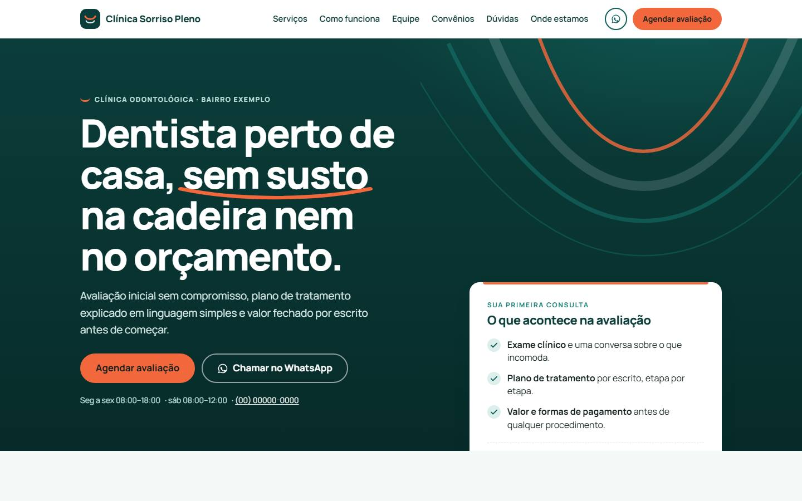
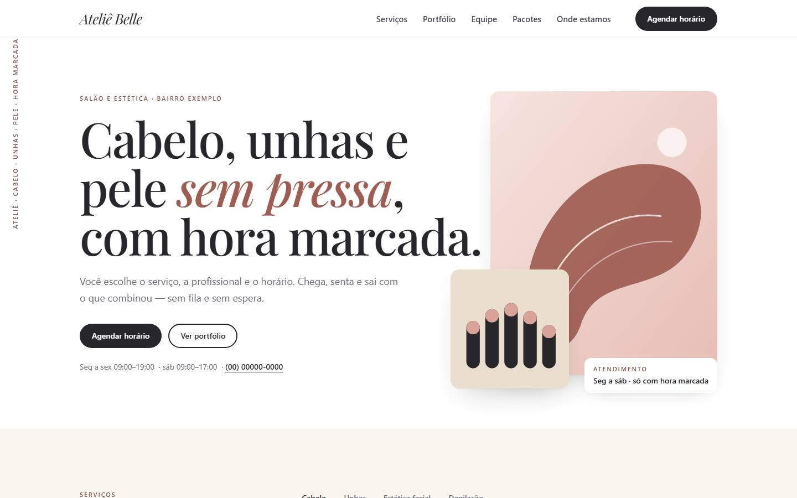
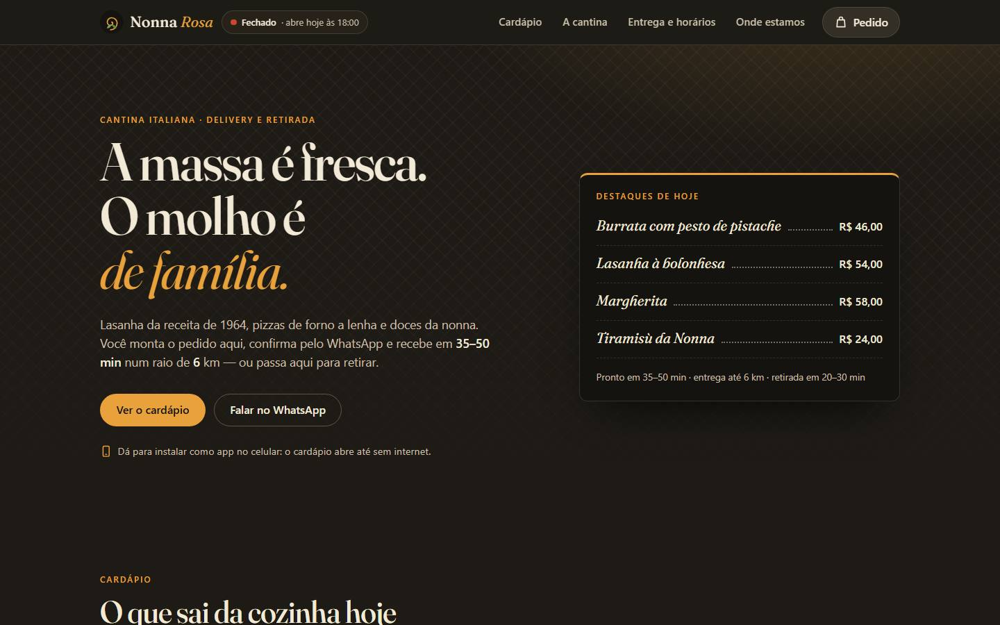
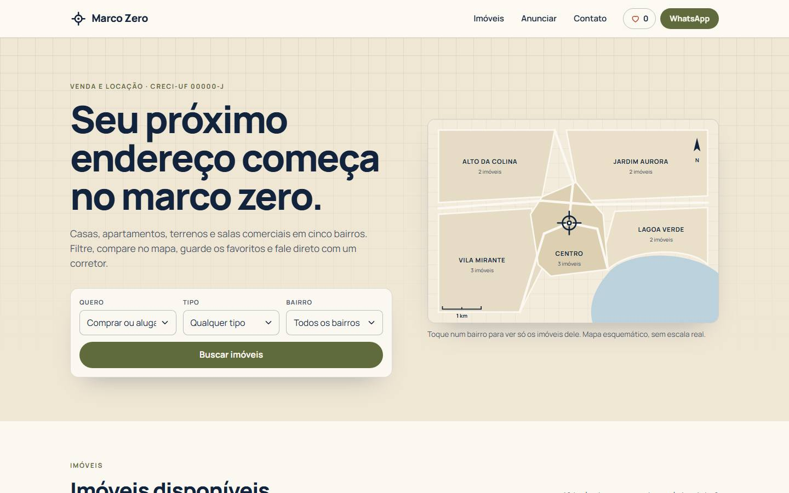
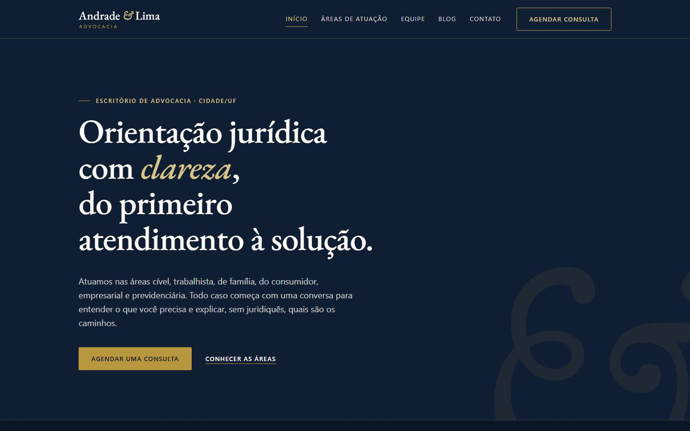
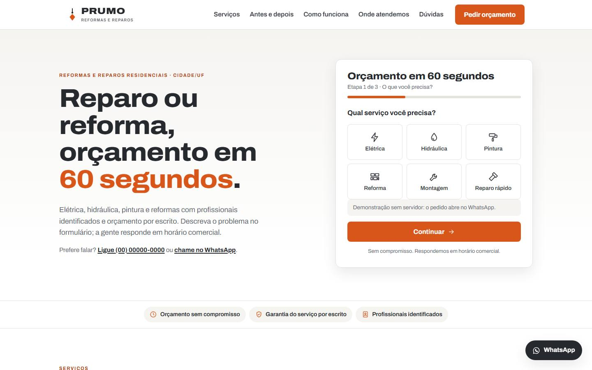

Seis nichos · seis técnicas · um backend
Sites para negócios locais, feitos como software.
Cada modelo abaixo atende um nicho procurado e demonstra, de propósito, uma abordagem diferente: HTML moderno sem framework, Tailwind compilado com Alpine, PWA instalável, catálogo com estado na URL e mapa, gerador estático em Python e landing de conversão com formulário em etapas. Todos passam pelo mesmo controle: layout em duas larguras, console limpo, acessibilidade e SEO básicos, em CI.
Nomes, telefones e endereços são fictícios. Nas demonstrações o backend está desligado: os formulários abrem o WhatsApp com a mensagem montada.
Os modelos
-

Clínica odontológica
Vanilla moderno
HTML semântico, CSS com custom properties e
color-mix(),<dialog>nativo para o agendamento,<details>no FAQ, horários livres vindos da API. -

Salão de beleza e estética
Tailwind compilado + Alpine.js
Utilitários compilados localmente (sem CDN de desenvolvimento), abas de serviços, galeria com lightbox e agendamento em etapas declarado com Alpine.
-

Restaurante com delivery
PWA instalável
Manifest e service worker com cache do shell e cardápio em JSON, carrinho em
localStorage, status aberto/fechado em tempo real e pedido montado para o WhatsApp. -

Imobiliária
Catálogo com estado na URL e mapa
Filtros compartilháveis por
URLSearchParams, detalhe por rota#/imovel/id, favoritos, mapa Leaflet com os resultados e formulário de interesse. -

Escritório de advocacia
Site multipágina gerado em Python
Gerador estático próprio, sem dependências: layout comum, páginas, blog em Markdown, sitemap, canonical e JSON-LD por página. Conteúdo dentro das regras de publicidade da OAB.
-

Reformas e reparos residenciais
Landing de conversão
Orçamento em três etapas com validação por passo, rascunho na sessão, honeypot e time-trap; barra fixa de contato no celular; comparador antes/depois acessível.
Backend e integrações
Todos os formulários falam o mesmo contrato com uma API em FastAPI + SQLite: leads e
agendamento com horários livres. Honeypot, consentimento LGPD gravado com hora e IP, limite por IP, corrida de
agendamento decidida por restrição UNIQUE no banco (não pela leitura anterior), CORS restrito e
repasse por webhook em segundo plano com tentativas, para n8n, Make ou CRM. Quinze testes sem rede e um
docker-compose com rootfs somente leitura, cap_drop: ALL e teto de recursos.
Como cada modelo é verificado
- Layout em 390 e 1440 px sem rolagem horizontal, com Playwright num servidor local (não em
file://, que esconde erro de caminho e defetch). - Console limpo: nenhum erro de script ou recurso faltando.
- Acessibilidade e SEO básicos:
lang, viewport, umh1, landmarks, link de pular,altem imagens, canonical, Open Graph, JSON-LD, nenhum script ou handler inline. - Convenções escritas em
CONVENCOES.md: placeholders fictícios,config.jspor cliente, contrato dos formulários com modo sem backend. - CI: o mesmo
tools/qa.pye opytestdo backend rodam a cada push; o Pages reconstrói o modelo multipágina e publica.